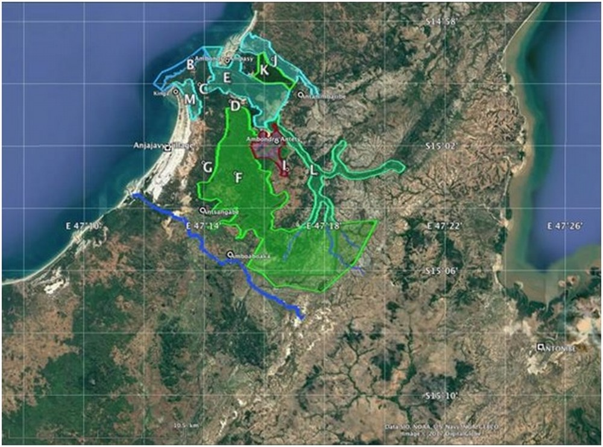

CNLEGIS
CNLEGIS

| DATE(S) | DATE TEXTES | TEXTE(S) | TYPE | NUM TEXTE | NUM | OBJET | OBJET MG | NUM JO | DATE JO | DATE JO FR | PAGE JO | ETAT | NOTE(S) | NOTES MG | DOC PDF FR | DOC PDF MG | MINISTERE(S) | id | HTML FR | HTML MG | ||||||
|---|---|---|---|---|---|---|---|---|---|---|---|---|---|---|---|---|---|---|---|---|---|---|---|---|---|---|
| 12 Avril 2018 | 12-04-2018 | Arrêté n° 8891/2018 Portant délégation de gestion de l'Aire Protégée dénommée "Foret Naturelle de Tsitongambarika" District de Taolagnaro, Région Anosy N° J.O: 3844 Date J.O: 08 Octobre 2018 Page J.O: 5537ETAT : En vigueur Voir le texte (VF) | Arrêté | 8891/2018 | A8891/2018 | Portant délégation de gestion de l'Aire Protégée dénommée "Foret Naturelle de Tsitongambarika" District de Taolagnaro, Région Anosy | 3844 | 08 Octobre 2018 | 08-10-2018 | 5537 | En vigueur | undefined | MINISTERE DE L'ENVIRONNEMENT, DE L'ECOLOGIE ET DES FORETS (MEEF) | 46546 | REPOBLIKAN'I MADAGASIKARA Fitiavana-Tanindrazana-Fandrosoana ------------------ MINISTERE DE L’ENVIRONNEMENT, DE L’ECOLOGIEET DES FORETS------------------ ARRETE N°8891/18/MEEF PORTANT DELEGATION DE GESTION DE L’AIRE PROTEGEE DENOMMEE « FORET NATURELLE DE TSITONGAMBARIKA », DISTRICT DE TOLAGNARO, REGION ANOSY ------------------- LE MINISTRE DE L'ENVIRONNEMENT, DE L’ECOLOGIE ET DES FORETS
ARRETE : Article premier.- Le présent arrêté est pris en application de l'article 36 de la Loi n° 2015-005 du 26 février 2015 portant refonte du Code de gestion des Aires Protégées et de l’article 51 et 52 du Décret n° 2017- 415 du 30 mai 2017 fixant les modalités et les conditions d’application de la Loi n° 2015-005 du 26 février 2015 portant refonte du Code de Gestion des Aires Protégées Article 2.- Par le présent arrêté, ASITY MADAGASCAR dont le siège se trouve à Lot IAB 39 Ter C Andrononobe Analamahitsy œuvrant dans le domaine de la conservation de la biodiversité, est désigné gestionnaire de l’ Aire Protégée dénommée «Forêt Naturelle de Tsitogambarika ». Article 3.- L'objet de la présente délégation de gestion concerne l’Aire Protégée «Forêt Naturelle de Tsitogambarika» d'une superficie totale de cinquante-huit mille cinq-cent-quatre-vingt-dix-sept Hectares (58597Ha), localisée administrativement à :
La carte avec indications géo-référencée de ses limites est portée en annexe. Article 4.- Dès la signature du présent arrêté, un contrat de délégation de gestion avec cahier des charges est établi pour préciser les droits et obligations du délégant et du délégataire. Article 5.- ASITY MADAGASCAR a l'obligation d’assurer la gestion effective et pérenne tout en respectant le contrat et les cahiers des charges de l'Aire Protégée dénommée « Forêt Naturelle de Tsitongambarika » Tout manquement aux obligations du délégataire définies dans le contrat et le cahier des charges annexés entraîne l'abrogation du présent arrêté, et ce, après une mise en demeure sans effet de un (01) mois. Article 6.- La durée de cette délégation de gestion est de renouvelable sous condition que les suivis et évaluations établissent la bonne performance du gestionnaire. Article 7.- Le présent arrêté entre en vigueur dès sa signature indépendamment de sa publication au Journal Officiel de la République et communiqué partout où besoin sera. Fait à Antananarivo, le 12 avril 2018 Le Ministre de l’Environnement, de l’Ecologie et des Forêts NDAHIMANANJARA Bénédicte Johanita | |||||||||||
| 12 Avril 2018 | 12-04-2018 | Arrêté n° 8892/2018 Portant délégation de gestion de l'Aire Protégée dénommée "Complexe Zones Humides Mahavavy Kinkony", District de Mitsinjo, Région Boeny N° J.O: 3844 Date J.O: 08 Octobre 2018 Page J.O: 5540ETAT : En vigueur Voir le texte (VF) | Arrêté | 8892/2018 | A8892/2018 | Portant délégation de gestion de l'Aire Protégée dénommée "Complexe Zones Humides Mahavavy Kinkony", District de Mitsinjo, Région Boeny | 3844 | 08 Octobre 2018 | 08-10-2018 | 5540 | En vigueur | undefined | MINISTERE DE L'ENVIRONNEMENT, DE L'ECOLOGIE ET DES FORETS (MEEF) | 46547 | REPOBLIKAN'I MADAGASIKARA Fitiavana-Tanindrazana-Fandrosoana ------------------ MINISTERE DE L’ENVIRONNEMENT, DE L’ECOLOGIE ET DES FORETS ------------------ ARRETE N°8892/2018/MEEF portant délégation de gestion de l’aire protégée dénommée « complexe zones humides mahavavy kinkony » district Mitsinjo Région Boeny LE MINISTRE DE L'ENVIRONNEMENT, DE L’ECOLOGIE ET DES FORETS
ARRETE : Article premier.- Le présent arrêté est pris en application de l'article 36 de la Loi n° 2015-005 du 26 février 2015 portant refonte du Code de gestion des Aires Protégées et de l’article 51 et 52 du Décret n° 2017- 415 du 30 mai 2017 fixant les modalités et les conditions d’application de la Loi n° 2015-005 du 26 février 2015 portant refonte du Code de Gestion des Aires Protégées. Article 2.- Par le présent arrêté, ASITY MADAGASCAR, dont le siège se trouve au Lot IAB 39 Ter C Andrononobe, Antananarivo, œuvrant dans le domaine de la conservation de la biodiversité, est désigné gestionnaire de l’Aire Protégée dénommée «Complexe Zones Humides Mahavavy Kinkony». Article 3.- L'objet de la présente délégation de gestion concerne l’Aire Protégée «Complexe Zones Humides Mahavavy Kinkony» d'une superficie totale de Trois cent deux milles hectares (302 000Ha), localisée administrativement à :
La carte avec indication géo-référencée de ses limites est portée en annexe. Article 4.- Dès la signature du présent arrêté, un contrat de délégation de gestion avec cahier des charges est établi pour préciser les droits et obligations du délégant et du délégataire. Article 5.- ASITY MADAGASCAR a l'obligation d’assurer la gestion effective et pérenne tout en respectant le contrat et les cahiers des charges de l'Aire Protégée dénommée « Complexe Zones Humides Mahavavy Kinkony ». Tout manquement aux obligations du délégataire définies dans le contrat et le cahier des charges annexés entraîne l'abrogation du présent arrêté, et ce, après une mise en demeure sans effet de un (01) mois. Article 6.- La durée de cette délégation de gestion est de 5 ans renouvelable sous condition que les suivis et évaluations établissent la bonne performance du gestionnaire. Article 7.- Le présent arrêté entre en vigueur dès sa signature indépendamment de sa publication au Journal Officiel de la République et communiqué partout où besoin sera. Fait à Antananarivo, le12 avril 2018 Le Ministre de l’Environnement, de l’Ecologie et des Forêts NDAHIMANANJARA Bénédicte Johanita | |||||||||||
| 12 Avril 2018 | 12-04-2018 | Arrêté n° 8893/2018 Portant délégation de gestion de l'Aire marine protégée dénommée "Ambodivahibe", Communes de Ramena et Mahavanona, District d'AntsirananaII, Région Diana N° J.O: 3844 Date J.O: 08 Octobre 2018 Page J.O: 5542ETAT : En vigueur Voir le texte (VF) | Arrêté | 8893/2018 | A8893/2018 | Portant délégation de gestion de l'Aire marine protégée dénommée "Ambodivahibe", Communes de Ramena et Mahavanona, District d'AntsirananaII, Région Diana | 3844 | 08 Octobre 2018 | 08-10-2018 | 5542 | En vigueur | undefined | MINISTERE DE L'ENVIRONNEMENT, DE L'ECOLOGIE ET DES FORETS (MEEF) | 46548 | REPOBLIKAN’I MADAGASIKARA Fitiavana-Tanindrazana-Fandrosoana ---------------------------- MINISTERE DE L’ENVIRONNEMENT, DE L’ECOLOGIEET DES FORETS---------------------------- ARRETE N° 8893/2018/MEEF Portant délégation de gestion de l'Aire Protégée dénommée Ambodivahibe, Communes de Ramena et Mahavanona, District d'Antsiranana II, Région Diana. LE MINISTRE DE L'ENVIRONNEMENT, DE L’ECOLOGIE ET DES FORETS,
A R R E T E : Article premier. Le présent arrêté est pris en application de l'article 36 de la Loi n° 2015-005 du 26 février 2015 portant refonte du Code de gestion des Aires Protégées et de l’article 51 et 52 du Décret n° 2017- 415 du 30 mai 2017 fixant les modalités et les conditions d’application de la Loi n° 2015-005 du 26 février 2015 portant refonte du Code de Gestion des Aires Protégées Article 2. Par le présent arrêté, Conservation International, dont le siège se trouve à Lot II W 27 D Villa Hajanirina Rue François Vittori Ankorahotra 101- Antananarivo œuvrant dans le domaine de la conservation de la biodiversité, est désigné gestionnaire de l’Aire Protégée dénommée «Ambodivahibe». Article 3. L'objet de la présente délégation de gestion concerne l’Aire Protégée «Ambodivahibe» d'une superficie totale de trente-neuf mille sept cent quatre-vingt-quatorze Hectares (39 794ha), localisée administrativement à :
La carte avec indications géo-référencée de ses limites est portée en annexe. Article 4. Dès la signature du présent arrêté, un contrat de délégation de gestion avec cahier des charges est établi pour préciser les droits et obligations du délégant et du délégataire. Article 5. Conservation International a l'obligation d’assurer la gestion effective et pérenne tout en respectant le contrat et les cahiers des charges de l'Aire Protégée dénommée Ambodivahibe Tout manquement aux obligations du délégataire définies dans le contrat et le cahier des charges annexés entraîne l'abrogation du présent arrêté, et ce, après une mise en demeure sans effet de un (01) mois. Article 6. La durée de cette délégation de gestion est de cinq (05) ans renouvelable sous condition que les suivis et évaluations établissent la bonne performance du gestionnaire. Article 7. Le présent arrêté entre en vigueur dès sa signature indépendamment de sa publication au Journal Officiel de la République et communiqué partout où besoin sera. Fait à Antananarivo, le 12 avril 2018 Le Ministre de l’Environnement, de l’Ecologie et des Forêts NDAHIMANANJARA Bénédicte Johanita Annexe de l’Arrêté N°8893/2018 / MEEF portant déléPation de gestion de l’aire Marine Protégée dénommée Ambodivahibe. Carte avec indication géo référencé des limites externes de l’aire Marine Protégée Ambodivahibe. | |||||||||||
| 12 Avril 2018 | 12-04-2018 | Arrêté n° 8894/2018 Portant délégation de gestion de l'Aire Protégée dénommée "Maromizaha" Communes rurales Andasibe, Ambatovola, District de Moramanga, Région Alaotra Mangoro N° J.O: 3844 Date J.O: 08 Octobre 2018 Page J.O: 5544ETAT : En vigueur Voir le texte (VF) | Arrêté | 8894/2018 | A8894/2018 | Portant délégation de gestion de l'Aire Protégée dénommée "Maromizaha" Communes rurales Andasibe, Ambatovola, District de Moramanga, Région Alaotra Mangoro | 3844 | 08 Octobre 2018 | 08-10-2018 | 5544 | En vigueur | undefined | MINISTERE DE L'ENVIRONNEMENT, DE L'ECOLOGIE ET DES FORETS (MEEF) | 46549 | REPOBLIKAN'I MADAGASIKARA Fitiavana-Tanindrazana-Fandrosoana ------------------- MINISTERE DE L’ENVIRONNEMENT, DE L’ECOLOGIE ET DES FORETS ------------------- ARRETE N°8894/18/MEEF Portant délégation de gestion de l’aire protégée dénommée « Maromizaha »communes rurales Andasibe, Ambatovola, District de Moramanga, Region Alaotra Mangoro. LE MINISTRE DE L'ENVIRONNEMENT, DE L’ECOLOGIEET DES FORETS,
A R R E T E : Article premier. Le présent arrêté est pris en application de l'article 36 de la Loi n° 2015-005 du 26 février 2015 portant refonte du Code de gestion des Aires Protégées et de l’article 51 et 52 du Décret n° 2017- 415 du 30 mai 2017 fixant les modalités et les conditions d’application de la Loi n° 2015-005 du 26 février 2015 portant refonte du Code de Gestion des Aires Protégées. Article 2. Par le présent arrêté, le Groupe d’Etude et de Recherche sur les Primates de Madagascar (GERP), dont le siège se trouve au Lgt 34 Cité des Professeurs Fort-Duchesne - ANTANANARIVO, œuvrant dans le domaine de la conservation de la biodiversité, est désigné gestionnaire de l’Aire Protégée dénommée «Maromizaha». Article 3. L'objet de la présente délégation de gestion concerne l’Aire Protégée « Maromizaha » d'une superficie totale de Mille huit cent quatre vingt Hectares (1880 Ha), localisée administrativement à :
La carte avec indications géo-référencée de ses limites est portée en annexe. Article 4. Dès la signature du présent arrêté, un contrat de délégation de gestion avec cahier des charges est établi pour préciser les droits et obligations du délégant et du délégataire. Article 5. Groupe d’Etude et de Recherche sur les Primates de Madagascar (GERP) a l'obligation d’assurer la gestion effective et pérenne tout en respectant le contrat et les cahiers des charges de l'Aire Protégée dénommée « Maromizaha ». Tout manquement aux obligations du délégataire définies dans le contrat et le cahier des charges annexés entraîne l'abrogation du présent arrêté, et ce, après une mise en demeure sans effet de un(01) mois. Article 6. La durée de cette délégation de gestion est de 5 ans renouvelable sous condition que les suivis et évaluations établissent la bonne performance du gestionnaire. Article 7. Le présent arrêté entre en vigueur dès sa signature indépendamment de sa publication au Journal Officiel de la République et communiqué partout où besoin sera. Fait à Antananarivo, le 12 avril 2018 Le Ministre de l’Environnement, de l’Ecologie et des Forêts NDAHIMANANJARA Bénédicte Johanita | |||||||||||
| 12 Avril 2018 | 12-04-2018 | Arrêté n° 8895/2018 Portant délégation de gestion de l'Aire Marine protégée dénommée "Nosy Antsoha" Commune de Bemanevika Ouest, District d'Ambanja, Région Diana N° J.O: 3844 Date J.O: 08 Octobre 2018 Page J.O: 5546ETAT : En vigueur Voir le texte (VF) | Arrêté | 8895/2018 | A8895/2018 | Portant délégation de gestion de l'Aire Marine protégée dénommée "Nosy Antsoha" Commune de Bemanevika Ouest, District d'Ambanja, Région Diana | Portant délégation de gestion de l'Aire Marine protégée dénommée "Nosy Antsoha" Commune de Bemanevika Ouest, District d'Ambanja, Région Diana | 3844 | 08 Octobre 2018 | 08-10-2018 | 5546 | En vigueur | undefined | MINISTERE DE L'ENVIRONNEMENT, DE L'ECOLOGIE ET DES FORETS (MEEF) | 46550 | REPOBLIKAN'I MADAGASIKARA Fitiavana-Tanindrazana-Fandrosoana --------------------- MINISTERE DE L’ENVIRONNEMENT, DE L’ECOLOGIE ET DES FORETS --------------------- ARRETE N°8895/2018 Portant délégation de gestion de l’Aire Marine Protégée dénommée « Nosy Antsoha » commune Bemanevika ouest, District ambanja, Région Diana. LE MINISTRE DE L'ENVIRONNEMENT, DE L’ECOLOGIE ET DES FORETS,
A R R E T E : Article premier. Le présent arrêté est pris en application de l'article 36 de la Loi n° 2015-005 du 26 février 2015 portant refonte du Code de gestion des Aires Protégées et de l’article 51 et 52 du Décret n° 2017- 415 du 30 mai 2017 fixant les modalités et les conditions d’application de la Loi n° 2015-005 du 26 février 2015 portant refonte du Code de Gestion des Aires Protégées Article 2. Par le présent arrêté, Lemuria Land, dont le siège se trouve à Immeuble ARO Antsahavola, 3e étage – Antananarivo 101 - Madagascar œuvrant de la conservation de la biodiversité, est désigné gestionnaire de l’Aire Protégée dénommée «Nosy Antsoha». Article 3. L'objet de la présente délégation de gestion concerne l’Aire Protégée «Nosy Antsoha» d'une superficie totale de Vingt huit virgule quarante sept Hectares (28,47 Ha), localisée administrativement à :
La carte avec indications géo-référencée de ses limites est portée en annexe. Article 4. Dès la signature du présent arrêté, un contrat de délégation de gestion avec cahier des charges est établi pour préciser les droits et obligations du délégant et du délégataire. Article 5. Lemuria Land a l'obligation d’assurer la gestion effective et pérenne tout en respectant le contrat et les cahiers des charges de l'Aire Protégée dénommée « Nosy Antsoha » Tout manquement aux obligations du délégataire définies dans le contrat et le cahier des charges annexés entraîne l'abrogation du présent arrêté, et ce, après une mise en demeure sans effet de un(01) mois. Article 6. La durée de cette délégation de gestion est de cinq (05) ans renouvelable sous condition que les suivis et évaluations établissent la bonne performance du gestionnaire. Article 7. Le présent arrêté entre en vigueur dès sa signature indépendamment de sa publication au Journal Officiel de la République et communiqué partout où besoin sera. Fait à Antananarivo, le 12 avril 2018 Le Ministre de l’Environnement, de l’Ecologie et des Forêts NDAHIMANANJARA Bénédicte Johanita | ||||||||||
| 12 Avril 2018 | 12-04-2018 | Arrêté n° 8896/2018 Portant délégation de gestion de l'Aire protégée dénommée "Ambohitr' Antsingy Montagne des Français", Communes rurales d'Antanamitarana, Mahavanona et Ramena, District d'Antsiranana II, Région Diana N° J.O: 3844 Date J.O: 08 Octobre 2018 Page J.O: 5548ETAT : En vigueur Voir le texte (VF) | Arrêté | 8896/2018 | A8896/2018 | Portant délégation de gestion de l'Aire protégée dénommée "Ambohitr' Antsingy Montagne des Français", Communes rurales d'Antanamitarana, Mahavanona et Ramena, District d'Antsiranana II, Région Diana | 3844 | 08 Octobre 2018 | 08-10-2018 | 5548 | En vigueur | undefined | MINISTERE DE L'ENVIRONNEMENT, DE L'ECOLOGIE ET DES FORETS (MEEF) | 46551 | REPOBLIKAN'I MADAGASIKARA Fitiavana-Tanindrazana-Fandrosoana ------------------------------ MINISTERE DE L’ENVIRONNEMENT, DE L’ECOLOGIE ET DES FORETS ---------------------------- ARRETE N°8896/2018 Portant délégation de gestion de l'Aire Protégée dénommée "Ambohitr'Antsigny Montagne des Français", Communes rurales d'Antanamitarana, Mahavanona et Ramena, District d'Antsiranana II, Région Diana. LE MINISTRE DE L'ENVIRONNEMENT, DE L’ECOLOGIE ET DES FORETS,
A R R E T E : Article premier. Le présent arrêté est pris en application de l'article 36 de la Loi n° 2015-005 du 26 février 2015 portant refonte du Code de gestion des Aires Protégées et de l’article 51 et 52 du Décret n° 2017- 415 du 30 mai 2017 fixant les modalités et les conditions d’application de la Loi n° 2015-005 du 26 février 2015 portant refonte du Code de Gestion des Aires Protégées. Article 2. Par le présent arrêté, le Service d’Appui à la Gestion de l’Environnement, dont le siège se trouve à Lot VI 21D Bis Villa Ranorosoa II Ambatoroka Antananarivo - 101, œuvrant de la conservation de la biodiversité, est désigné gestionnaire de l’Aire Protégée dénommée «Ambohitr’Antsingy Montagne des Français». Article 3. L'objet de la présente délégation de gestion concerne l’Aire Protégée «Ambohitr’Antsingy Montagne des Français» d'une superficie totale de six mille quarante neuf hectares (6049 ha) localisée administrativement à :
La carte avec indications géo-référencée de ses limites est portée en annexe. Article 4. Dès la signature du présent arrêté, un contrat de délégation de gestion avec cahier des charges est établi pour préciser les droits et obligations du délégant et du délégataire. Article 5. Service d’Appui à la Gestion de l’Environnement a l'obligation d’assurer la gestion effective et pérenne tout en respectant le contrat et les cahiers des charges de l'Aire Protégée dénommée « Ambohitr’antsingy Montagne des Français». Tout manquement aux obligations du délégataire définies dans le contrat et le cahier des charges annexés entraîne l'abrogation du présent arrêté, et ce, après une mise en demeure sans effet de un(01) mois. Article 6. La durée de cette délégation de gestion est de cinq (05) ans renouvelable sous condition que les suivis et évaluations établissent la bonne performance du gestionnaire. Article 7. Le présent arrêté entre en vigueur dès sa signature indépendamment de sa publication au Journal Officiel de la République et communiqué partout où besoin sera. Fait à Antananarivo, le 12 avril 2018 Le Ministre de l’Environnement, de l’Ecologie et des Forêts NDAHIMANANJARA Bénédicte Johanita | |||||||||||
| 12 Avril 2018 | 12-04-2018 | Arrêté n° 8897/2018 Portant délégation de gestion de l’Aire Protégée dénommée«Paysage Harmonieux Protégée Bemanevika» Commune d’AntananarivoHaut et Beandrarezo, District de Bealanana Régional Sofia. N° J.O: 3844 Date J.O: 08 Octobre 2018 Page J.O: 5550ETAT : En vigueur Voir le texte (VF) | Arrêté | 8897/2018 | A8897/2018 | Portant délégation de gestion de l’Aire Protégée dénommée«Paysage Harmonieux Protégée Bemanevika» Commune d’AntananarivoHaut et Beandrarezo, District de Bealanana Régional Sofia. | 3844 | 08 Octobre 2018 | 08-10-2018 | 5550 | En vigueur | undefined | MINISTERE DE L'ENVIRONNEMENT, DE L'ECOLOGIE ET DES FORETS (MEEF) | 46552 | REPOBLIKAN'I MADAGASIKARA Fitiavana-Tanindrazana-Fandrosoana————— MINISTERE DE L’ENVIRONNEMENT, DE L’ECOLOGIE ET DES FORETS ————— ARRETE N° 8897/2018 Portant délégation de gestion de l’Aire Protégée dénommée « Paysage Harmonieux Protégée Bemanevika » Commune d’Antananarivo Haut et Beandrarezo, District de Bealanana Régional Sofia. LE MINISTRE DE L’ENVIRONNEMENT, DE L’ECOLOGIE ET DES FORETS,
A R R E T E : Article premier. Le présent arrêté est pris en application de l’article 36 de la loi n°2015-005 du 26 février 2015 portant refonte du Code de gestion des aires Protégées et des articles 51 et 52 du décret n°2017-415 du 30 mai 2017 fixant les modalités et les conditions d’application de la loi n°2015-005 du 26 février 2015 portant refonte du code de Gestion des Aires protégées. Article 2. Par le présent arrêté, The Peregrine Fund, dont le siège se trouve à Tsiadana Antananarivo, œuvrant dans le domaine de la conservation de la biodiversité, est désigné gestionnaire de l’Aire Protégée dénommée « Bemanevika ». Article 3. L’objet de la présente délégation de gestion concerne l’Aire Protégée « Bamanevika » d’une superficie totale de trente-cinq mille six cent cinq hectares (35 605 Ha), localisée administrativement à :
La carte géo-référencée de ses limites est portée en annexe. Article 4. Dès la signature du présent arrêté, le contrat de délégation de gestion avec cahier des charges est établi pour préciser les droits et obligations du délégant et du délégataire. Article 5. The Peregrine Fund a l’obligation d’assurer la gestion effective et pérenne tout en respectant le contrat et les cahiers des charges de l’Aire Protégée dénommée « Paysage harmonieux protégé Bemanevika ». Tout manquement aux obligations du délégataire définies dans le contrat et le cahier des charges annexés entraîne l’abrogation du présent arrêté, et ce, après une mise en demeure sans effet de un (1) mois. Article 6. La durée de cette délégation de gestion est de cinq (5) ans renouvelable sous condition que les suivis et évaluations établissement la bonne performance du gestionnaire. Article 7. Le présent arrêté entre en vigueur dès sa signature indépendamment de sa publication au journal officie de la République et communiqué partout où besoin sera. Antananarivo, le 12 avril 2018 NDAHIMANANJARA Bénédicte Johanita | |||||||||||
| 17 Janvier 2018 | 17-01-2018 | Arrêté n° 887/2018 Portant mise en protection temporaire de l'Aire protégée en création dénommée "Sakara", District de Fort Dauphin, Région Anosy. N° J.O: 3812 Date J.O: 07 Mai 2018 Page J.O: 1861ETAT : En vigueur Voir le texte (VF) | Arrêté | 887/2018 | A887/2018 | Portant mise en protection temporaire de l'Aire protégée en création dénommée "Sakara", District de Fort Dauphin, Région Anosy. | 3812 | 07 Mai 2018 | 07-05-2018 | 1861 | En vigueur |
| undefined | MINISTERE AUPRES DE LA PRESIDENCE CHARGE DES PROJETS PRESIDENTIELS, DE L'AMENAGEMENT DU TERRITOIRE ET DE L'EQUIPEMENT (MPPATE),MINISTERE DU TOURISME (MT),MINISTERE DE L'ENVIRONNEMENT, DE L'ECOLOGIE ET DES FORETS (MEEF) | 46086 | MINISTERE AUPRES DE LA PRESIDENCE CHARGE DES PROJETS PRESIDENTIELS, DE L’AMENAGEMENT DU TERRITOIRE ET DE L’EQUIPEMENT __________ MINISTERE DU TOURISME MINISTERE DE L’ENVIRONNEMENT, DE L’ECOLOGIE ET DES FORETS __________ ARRETE INTERMINISTERIEL N°887/2018 Portant mise en protection temporaire de l’Aire protégée en création dénommée « Sakara », District de Fort Dauphin, Région Anosy.
LE MINISTRE AUPRES DE LA PRESIDENCE CHARGE DES PROJETS PRESIDENTIELS, DE L’AMENAGEMENT DU TERRITOIRE ET DE L’EQUIPEMENT, LE MINISTRE DU TOURISME, LE MINISTRE DE L’ENVIRONNEMENT, DE L’ECOLOGIE ET DES FORETS,
A R R E T E N T : Article premier. En application de l’article 28 de la loi n°2015-005 du 26 février 2015 portant refonte du Code de gestion des Aires Protégée, le site de la Nouvelle Aire Protégée « Sakaraha » est admis au bénéfice de la protection temporaire. Article 2. La protection temporaire est prononcé pour une période de deux (2) ans, renouvelable une fois. Le décret de création de l’Aire Protégée concernée doit intervenir avant la fin de cette période. Article 3. Les terrains concernés sont de nature privée. La superficie de l’Aire protégée en création dénommée « Sakaraha » est de 2 077 ha 90 ca environ. Une carte de localisation avec indications géo-référencées du site « Sakaraha » est annexée au présent arrêté. Article 4. Est désignée gestionnaire du site susmentionné, la Société d’Exploitation Agricole de Ranopiso (SEAR). La délégation de gestion temporaire de l’Aire Protégée en création peut être toutefois accordée par acte authentique à une personne publique ou privée, lequel détermine les délimitations de l’Aire Protégée, la définition des responsabilités au délégataire, le plan d’aménagement du site et le cahier des charges. Le principe de gestion de l’Aire Protégée en création est celui de la gouvernance privée, tel que défini par l’article 6 de la loi n°2015-005 du 26 avril 2015 portant refonte du code de Gestion des Aires Protégées et l’article 37 du décret n°2017-415 du 30 mai 2017 fixant les modalités et les conditions d’application de la loi n°2015-005 du 26 février 2015 portant refonte du Code de Gestion des Aires Protégées. Article 5. Un Comité d’Orientation et d’Evaluation (COE), dont les membres sont mentionnés à l’article 11 assure le suivi de l’exécution des actions découlant du présent arrêté. Il est présidé par le Directeur Régional chargé de l’Environnement de l’Ecologie et des Forêts d’Anosy, et comprend notamment les représentants de la Région dont le Directeur Régional du Développement Régional, les Services Techniques déconcentrés des Ministères concernés, des Communes, des Représentants de communautés locales et/ou des communautés de base ainsi que toutes personnes ou organismes choisis pour ses compétences particulières. Article 6. Les objectifs principaux de gestion poursuivis sur le site « Sakara » sont d’assurer à long terme la conservation de l’intégrité de la biodiversité, la durabilité des fonctions écologiques et la maintenance de la productivité des écosystèmes nécessaires au bien être des communautés riveraines, ainsi que l’utilisation durable des ressources naturelles. Les objectifs de gestion comprennent :
Article 7. Sont autorisés, conformément au schéma global d’aménagement :
Sont règlementées conformément à la législation en vigueur et au schéma global d’aménagement :
Notamment :
Un « Plan d’Aménagement et de Gestion est élaboré par le gestionnaire, de manière participative, dans le cadre des opérations préalables à la création définitive par décret de l’Aire Protégée en voie de création. Article 8. Les activités ci-après liées au droit d’usage sont règlementées conformément au schéma global d’aménagement, aux règles internes de gestion, au Dina, à la législation en vigueur et aux principes d’utilisation durable des ressources naturelles du site, et doivent faire l’objet d’un accord du gestionnaire de l’aire Protégée en création. Ces activités sont :
Article 9. A l’intérieur de l’aire Protégée, aucune instruction de droit réel immobilier ne doit être effectuée sans l’accord préalable de la Société d’Exploitation Agricole de Ranopiso (S.E.A.R.) sauf inscription forcée. Article 10. Le gestionnaire de l’aire Protégée en création doit initier durant cette phase de mise en protection temporaire l’Etude d’Impact Environnemental. Article 11. Pendant la période de protection temporaire :
Par ailleurs, des Dina pourront être conclus entre les membres de la collectivité selon les dispositions légales en vigueur. Article 12. Les infractions au présent arrêté sont constatées et réprimées conformément à la législation en vigueur. Article 13. Le présent arrêté entre en vigueur dès sa signature indépendamment de sa publication au Journal Officiel de la République et communiqué partout où besoin sera. Antananarivo, le 17 janvier 2018 Le Ministre auprès de la Présidence chargé des Projets Présidentiels, de l’Aménagement du Territoire et de l’équipement, RAMANANTSOA Benjamina Ramarcel Le Ministre du Tourisme, RATSIRAKA Iarovana Roland Le Ministre de l’Environnement, de l’Ecologie et des Forêts, NDAHIMANANJARA Bénédicte Johanita | ||||||||||
| 28 Juillet 2017 | 28-07-2017 | Arrêté n° 18176/2017 Portant mise en protection temporaire de l'Aire Protégée en création dénommée "Anjajavy", Distrit d'Analalava, Région Sofia. N° J.O: 3779 Date J.O: 09 Octobre 2017 Page J.O: 5957ETAT : En vigueur Voir le texte (VF) | Arrêté | 18176/2017 | A18176/2017 | Portant mise en protection temporaire de l'Aire Protégée en création dénommée "Anjajavy", Distrit d'Analalava, Région Sofia. | 3779 | 09 Octobre 2017 | 09-10-2017 | 5957 | En vigueur |
| undefined | MINISTERE AUPRES DE LA PRESIDENCE CHARGE DES MINES ET DE PETROLE (MPMP),MINISTERE DU TOURISME (MT),MINISTERE DE L'ENVIRONNEMENT, DE L'ECOLOGIE ET DES FORETS (MEEF),MINISTERE DES RESSOURCES HALIEUTIQUES ET DE LA PECHE (MRHP),SECRETARIAT D'ETAT AUPRES DU MINISTERE DES RESSOURCES HALIEUTIQUES ET DE LA PECHE CHARGE DE LA MER (SEMRHPM) | 45390 | REPOBLIKAN'I MADAGASIKARA Fitiavana-Tanindrazana-Fandrosoana ----------------------------- MINISTERE AUPRES DE LA PRESIDENCE CHARGE DES PROJETS PRESIDENTIELS, DE L’AMENAGEMENT DU TERRITOIRE ET DE L'EQUIPEMENT MINISTERE AUPRES DE LA PRESIDENCE CHARGE DES MINES ET DU PETROLE MINISTERE DU TOURISME MINISTERE DE L’ENVIRONNEMENT, DE L'ECOLOGIE ET DES FORETS MINISTERE DES RESSOURCES HALIEUTIQUESET DE LA PECHE SECRETARIAT D’ETAT AUPRES DU MINISTERE DE LA PECHE ET DES RESSOURCES HALIEUTIQUES CHARGE DE LA MER ARRETE INTERMINISTERIEL N°18176 /2017 PORTANT MISE EN PROTECTION TEMPORAIRE DE L’AIRE PROTEGEE EN CREATION DENOMMEE «ANJAJAVY» DISTRICT D’ANALALAVA, REGION SOFIA LE MINISTRE AUPRES DE LA PRESIDENCE CHARGE DES PROJETS PRESIDENTIELS DE LAMENAGEMENT DU TERRITOIRE ET DE LÉQUIPEMENT. LE MINISTRE AUPRES DE LA PRESIDENCE CHARGE DES MINES ET DU PETROLE LE MINISTRE DE L’ENVIRONNEMENT, DE L’ECOLOGIE ET DES FORETS, LE MINISTRE DES RESSOURCES HALIEUTIQUES ETDE LA PECHE, LE SECRETAIRE D’ETAT AUPRES DU MINISTERE DES RESSOURCES HALIEUTIQUES ET DE LA PECHE, CHARGE DE LA MER
- Vu la Constitution; - Vu la Loi organique n°2014-018 du 14 août 2014 régissant les compétences, les modalités d’organisation et de fonctionnement des Collectivités Territoriales Décentralisées, ainsi que celles de la gestion de leurs propres affaires, complétée par la Loi organique n°2016-030 du 23 août 2016 ; - Vu la Loi N° 95-017 du 25 août 1995 portant le Code du Tourisme, - Vu la Loi n° 97-017 du 08 août 1997 portant révision de la législation forestière ; - Vu la Loi n° 99-022 du 17 août 1999 portant Code minier, modifiée par la loi n°2005-021 du 19 octobre 2005 ; - Vu la Loi n°2001-004 du 25 Octobre 2001 portant réglementation générale des Dina en matière de sécurité publique; - Vu la Loi n°2005-019 du 17 octobre 2005 fixant les principes régissant les statuts des terres ; - Vu la Loi n°2006-031 du 24 novembre 2006 fixant le régime juridique de la propriété foncière privée non titrée ; - Vu la Loi n°2008-013 du 23 juillet 2008 sur le Domaine Public ; - Vu la Loi n°2008-14 du 23 juillet 2008 sur le domaine privé de l’Etat, des Collectivités décentralisées et des personnes morales de droit public ; - Vu la Loi n°2014-020 du 27 septembre 2014 relatives aux ressources des Collectivités Territoriales Décentralisées, aux modalités d’élections, ainsi qu’à l’organisation, au fonctionnement et aux attributions de leurs organes et ses textes subséquents d’application ; - Vu la Loi n°2015-003 du 19 février 2015 portant Charte de l’Environnement Malagasy actualisée ; - Vu la Loi n°2015-005 du 26 février 2015 portant refonte du Code de Gestion des Aires Protégées ; - Vu la Loi n°2015-051 du 03 février 2016 portant Orientation de l’Aménagement du Territoire ; - Vu la Loi n°2015-052 du 03 février 2016 relative à l’Urbanisme et à l’Habitat ; - Vu la Loi N°2015-053 du 03 février 2016 portant Code de la pêche et de l’aquaculture ; - Vu l’Ordonnance n°93-022 du 04 mai 1993 portant réglementation de la pêche et l’aquaculture; - Vu le Décret n°94-112 du 18 février 1994 portant organisation générale des activités de la pêche maritime ; - Vu le Décret n°97-1455 du 18 décembre 1997 portant organisation générale des activités de collecte des produits halieutiques d’origine marine ; - Vu le Décret n°97-1456 du 18 décembre 1997 portant réglementation de la pêche dans les eaux continentales et saumâtres du domaine public de l’Etat ; - Vu le Décret n° 99-954 du 15 décembre 1999 relatif à la mise en compatibilité des investissements avec l’environnement (MECIE), modifié par le décret n° 2004-167 du 03 février 2004 ; - Vu le Décret n°2007-957 du 31 octobre 2007 portant définition des conditions d’exercice de la pêche des crevettes côtières ; - Vu le Décret N°2015-629 du 07 avril 2015 portant création d’une Commission Nationale de Gestion Intégrée des Mangroves ; - Vu le Décret 2015-960 du 16 juin 2015 fixant les attributions du chef de l’exécutif des Collectivités Territoriales Décentralisées ; - Vu le Décret n°2016-1352 du 08 novembre 2016 portant organisation des activités de préservation des ressources halieutiques et écosystèmes aquatiques ; - Vu le Décret n°2016-250 du 10 avril 2016 portant nomination du Premier Ministre, Chef du Gouvernement ; - Vu le Décret n°2016-265 du 15 avril 2016, modifié et complété par les décret n°2016-460 du 11 mai 2016, n°2017-148 du 02 mars 2017, n°2017-262 du 20 avril 2017 et n°2017-590 du 17 juillet 2017, portant nomination des membres du Gouvernement ; - Vu le Décret n°2016-294 du 26 avril 2016 fixant les attributions du Ministre auprès de la Présidence chargé des Projets Présidentiels, de l’Aménagement du Territoire et de l’Equipement ainsi que l’organisation générale de son Ministère; - Vu le Décret n°2015-135 du 17 février 2015 portant attributions du Ministre auprès de la Présidence chargé des Mines et du Pétrole ainsi que l’organisation générale de son Ministère; - Vu le Décret n°2016-296 du 26 avril 2016 fixant les attributions du Ministre du Tourisme ainsi que l’organisation générale de son Ministère ; - Vu le Décret n°2016-298 du 26 avril 2016 fixant les attributions du Ministre de l’Environnement, de l’Ecologie et des Forêts ainsi que l’organisation générale de son Ministère ; - Vu le Décret n°2014-298 du 13 mai 2014 portant attribution du Ministre des Ressources Halieutiques et de la Pêche ainsi que l’organisation générale de son Ministère ; - Vu le Décret n°2016-301 du 26 avril 2016 fixant les attributions du Secrétariat d’Etat auprès du Ministère des Ressources Halieutiques et de la Pêche chargé de la Mer ainsi que l’organisation générale de son Département ; - Vu l’Arrêté interministériel n° 4355/1997 du 13 mai 1997 portant définition et délimitation des zones sensibles ; - Vu l’Arrêté n°18177-04 du 27 septembre 2004 portant définition des zones forestières sensibles ; - Vu l'Arrêté n°21694-2004 du 11 novembre 2004 relatif à la suspension de toute activité extractive de ressources ligneuses dans les zones réservées comme sites de conservation ; - Vu l’Arrêté N°32099/2014 du 24 octobre 2014 portant règlementation de l’aquaculture des crabes de mangrove (Scylla serrata) de Madagascar ; - Vu l’Arrêté interministériel N°32100/2014 du 24 octobre 2014 portant interdiction de coupe, d’achat, de collecte et de vente de toutes espèces de mangroves au niveau du territoire national ; - Vu l’Arrêté N°32101/2014 du 24 octobre 2014 portant règlementation des crabes de mangrove (Scylla serrata) de Madagascar ; - Vu l’Arrêté ministériel N°32102/2014 du 24 octobre 2014 portant exportation des crabes de mangrove (Scylla serrata) de Madagascar ; - Vu l’avis favorable de la Commission du Système des Aires Protégées de Madagascar en réunion du 01 juin 2017 ARRETENT: Article premier: - En application de l’article 28 de la loi n°2015-005 du 26 février 2015 portant refonte du Code de gestion des Aires Protégées, le site de la Nouvelle Aire Protégée « Anjajavy » est admis au bénéfice de la protection temporaire. Article 2.- La protection temporaire est prononcée pour une période de deux (02) ans, renouvelable une fois. Le décret de création de l’Aire Protégée concernée doit intervenir avant la fin de cette période. Article 3.- La superficie de l’Aire Protégée en création dénommée « Anjajavy » est de 7230 ha environ. Une carte de localisation avec indications géo-référencées du site « Anjajavy » est annexée au présent arrêté. Article 4.- Est désignée gestionnaire du site susmentionné, la Direction Régionale chargée de l’Environnement, de l’Ecologie et des Forêts de Sofia. La délégation de gestion temporaire de l'Aire Protégée en création peut être toutefois accordée par arrêté ministérielle à une personne publique ou privée, lequel arrêté détermine les termes de la délégation, les droits et obligations des parties. Le principe de gestion de l’Aire protégée en création est celui de la cogestion, type gestion participative ou collaborative, tel que défini par l’article 6 de la loi n° 2015-005 du 26 février 2015 portant refonte du Code de Gestion des Aires Protégées. Article 5.- Un comité d’orientation et d’évaluation (COE), dont les membres sont mentionnés à l’article 11 assure le suivi de l’exécution des actions découlant du présent arrêté. Il est présidé par le Directeur Régional chargé de l’Environnement, de l’Ecologie et des Forêts de Sofia, et comprend notamment les représentants de la Région dont le Directeur Régional du Développement Régional, les Services Techniques déconcentrés des ministères concernés, des Communes, des représentants des communautés locales et/ou des communautés de base ainsi que toutes personnes ou organismes choisis pour ses compétences particulières. Article 6.- Les objectifs principaux de gestion poursuivis sur le site «Anjajavy» sont d’assurer à long terme la conservation de l’intégrité de la biodiversité, la durabilité des fonctions écologiques et la maintenance de la productivité des écosystèmes nécessaires au bien être des communautés riveraines, ainsi que l’utilisation durable des ressources naturelles. Les objectifs spécifiques de gestion comprennent : - le maintien des différents écosystèmes du site et de la connectivité entre les fragments des zones humides ; - la protection des populations viables d’espèces endémiques et menacées de faune et de flore et - la valorisation du tourisme écologique et l’utilisation durable des ressources naturelles pour contribuer à la réduction de la pauvreté. Article 7.- Sont autorisés, conformément au schéma global d’aménagement : - les travaux d’aménagement en faveur du tourisme écologique ayant obtenu un permis d’implantation et un permis environnemental; - les activités légales liées aux recherches scientifiques; - les activités liées à la conservation : suivi écologique, restauration, contrôle et surveillance ; - l’utilisation piétonnière sur les principaux sentiers existants; - l’accès aux sites culturels par les sentiers y menant et la pratique des activités culturelles ; - les activités liées à la gestion et l’utilisation durable des ressources forestières et celles des zones humides ; - la petite pêche et la pêche artisanale - sur certains sites prédéfinis - respectant d’une manière générale, les dispositions réglementaires applicables à la pêcherie : • matériels et engins de pêche réglementés et autorisés, • substances non toxiques, • interdiction d’utilisation d’explosifs et des procédés électriques sur le poisson, ou tout dispositif permettant une immersion plus longue que celle autorisée par la seule respiration naturelle, • interdiction de mode ou instrument de pêche prohibé, ou détention de cet instrument, • interdiction de pêche et/ou collecte dans les zones pendant les saisons et les heures où la pêche est interdite, • interdiction de pêche et/ou collecte des espèces dont la capture est prohibée, ou dont les dimensions sont inférieures à celles autorisées, • interdiction de pêche sans autorisation préalable ou pêche au-delà des limites des quantités et d'espèces autorisées ; - la pêche récréative/sportive. Sont réglementées conformément à la législation en vigueur et au schéma global d’aménagement : - les activités de bois énergie et de service à l’intérieur de l’Aire Protégée dénommée « Anjajavy » Toute activité incompatible avec les objectifs susmentionnés, est interdite à l’intérieur de l’Aire protégée en création. Notamment, - Le défrichement, l’extension des périmètres de culture existant qu’après l’élaboration du plan d’aménagement et de gestion simplifié qui définira les règles d’utilisation et de gestion des différentes unités d’aménagement; - Les feux de végétation ; - Toute forme de pêche industrielle hormis le cas de survie lors d’un accident ou cataclysme naturel ; - Toutes constructions immobilières sans autorisation préalable des autorités compétentes ; - Tout type d’aquacultures hormis ceux ayant obtenu des autorisations industrielle et semi industrielle ; - Le prélèvement d’espèces végétales à des fins de commercialisation ; - La chasse, la consommation et la vente d'animaux protégées ; - L’exploitation forestière ; - Les activités minières et pétrolières à l’intérieur de l’Aire protégée (exploration ou exploitation) découlant de l’octroi de nouveaux permis minier ou pétrolier ; - La pêche utilisant des matériels et engins de pêche non réglementés ni autorisés ; - et de manière générale tout acte de nature à apporter des perturbations à la faune et à la flore ainsi qu’à l’aspect original du milieu naturel. Un « Plan d’Aménagement et de Gestion » est élaboré par le gestionnaire, de manière participative, dans le cadre des opérations préalables à la création définitive par décret de l'Aire Protégée en voie de création. Article 8.- Les activités ci-après liées au droit d’usage sont réglementées conformément au schéma global d’aménagement, aux règles internes de gestion, au DINA, à la législation en vigueur et aux principes d’utilisation durable des ressources naturelles du site, et doivent faire l’objet d’un accord du gestionnaire de l’Aire Protégée en création. Ces activités sont : - le pâturage ainsi que le pacage de troupeaux de bovidés ; - la récolte de miel et de cire, des plantes médicinales, des fruits et des plantes comestibles et autres produits accessoires des forêts respectant les principes de l’utilisation durable ; - la petite pêche; - la chasse aux animaux nuisibles et gibiers ; - le prélèvement de produits accessoires respectant les principes de l’utilisation durable. Article 9.- A l’intérieur de l'Aire Protégée, aucune instruction de demande de terrain, inscription de droit réel immobilier, délivrance de titre foncier ou certificat foncier ne doit être effectuée sans l’accord préalable du représentant local du Ministère chargé des Aires Protégées. Par ailleurs, toutes les demandes d’acquisition de terrain en cours d’instruction sur une portion de terrain englobé dans la zone mise en protection temporaire sont gelées. Article 10.-Est suspendue l’octroi de nouveaux permis/licences de pêche industrielle, miniers et forestiers sur l'ensemble de l'Aire Protégée en création. Article 11.- L’Administration chargée des Aires Protégées doit vei ny Solo-tenan-paritry ny Sampan-draharaha misahana ny ller à ce que la protection temporaire du site Anjajavy n’empêche pas les titulaires des permis/licences de pêche industrielle et artisanale, miniers et pétroliers bénéficiant des droits acquis de mener dans les règles de l’art et dans le respect de la réglementation en vigueur les activités découlant desdits droits de pêche, miniers et/ou pétroliers. Néanmoins, une Etude d’Impact Environnemental (EIE) ou une mise en Conformité Environnementale doit être initiée par l’opérateur du projet minier ou pétrolier avant la sortie du décret portant création définitive de l'Aire Protégée et avant toute exploitation. L'application des conditions et exigences spécifiques prévues par les réglementations en vigueur par le gestionnaire de l’Aire Protégée est établie sur la base de cette étude d’impact. En cas de renonciation par les titulaires de ces permis miniers et/ou pétroliers, les périmètres ou blocs concernés s’ajoutent d’office à la superficie de protection temporaire définie par le présent arrêté, et le nouvel octroi n’y sera plus possible. La restauration des sites par le titulaire du permis minier et ou pétrolier est et demeure obligatoire après les activités exercées conformément à la législation environnementale en vigueur. Article 12.- Le gestionnaire de l’Aire Protégée en création doit initier durant cette phase de mise en protection temporaire l’Etude d’Impact Environnemental. Article13.- Pendant la période de protection temporaire, - la Région Sofia ; - les Communes rurales concernées ; - les Services Techniques Déconcentrés chargés de l’Aménagement du Territoire et de l’Equipement ; - les Services Techniques Déconcentrés chargés des Mines et du Pétrole ; - les Services Techniques Déconcentrés chargés du Tourisme ; - les Services Techniques Déconcentrés chargés de l’Environnement, de l’Ecologie et des Forêts ; - les Services Techniques Déconcentrés chargés des Ressources Halieutiques et de la Pêche ; - les Services Techniques Déconcentrés chargés de la Mer ; et - les Brigades de la Gendarmerie de la zone concernée ; sont chargés, chacun en ce qui leur concerne, de la surveillance et du contrôle de proximité de l’Aire protégée en création, en collaboration avec le Gestionnaire désigné et conformément aux règles de gestion participative instaurées au titre de la protection temporaire. Par ailleurs, des Dina pourront être conclus entre les membres de la collectivité selon les dispositions légales en vigueur. Article 14.- Les infractions au présent arrêté sont constatées et réprimées conformément à la législation en vigueur. Article 15.- Le présent arrêté entre en vigueur dès sa signature indépendamment de sa publication au Journal Officiel de la République et communiqué partout où besoin sera.
Fait à Antananarivo, le 28 Juillet 2017
ANNEXE DE L’ARRETE INTERMINISTERIEL N° 18176 /2017 PORTANT MISE EN PROTECTION TEMPORAIRE DE L’AIRE PROTEGEE EN CREATION DENOMMEE «ANJAJAVY» DISTRICT D’ANALALAVA, REGION SOFIA
CARTE DE LOCALISATION AVEC COORDONNEES GEO-REFERENCEES DE L’AIRE PROTEGEE EN CREATION DENOMMEE «ANJAJAVY»
 | ||||||||||
| 30 Mai 2017 | 30-05-2017 | Décret n° 2017-415 Fixant les modalités et les conditions d'application de la loi n°2015-005 du 26 février 2015 portant refonte du Code de Gestion des Aires Protégées. N° J.O: 3776 Date J.O: 18 Septembre 2017 Page J.O: 5742ETAT : En vigueur Voir le texte (VF) | Décret | 2017-415 | D2017-415 | Fixant les modalités et les conditions d'application de la loi n°2015-005 du 26 février 2015 portant refonte du Code de Gestion des Aires Protégées. | 3776 | 18 Septembre 2017 | 18-09-2017 | 5742 | En vigueur |
| undefined | MINISTERE DE L'ENVIRONNEMENT, DE L'ECOLOGIE ET DES FORETS (MEEF) | 45368 | REPOBLIKAN'I MADAGASIKARA Fitiavana-Tanindrazana-Fandrosoana ------------------- MINISTERE DE L'ENVIRONNEMENT, DE L'ECOLOGIE ET DES FORETS ------------------- DECRET N°2017- 415 du 30 mai 2017 fixant les modalités et les conditions d'application de la LOI n° 2015-005 du 26 février 2015 portant refonte du Code de Gestion des Aires Protégées |